our bca 4 practical is here
here you can see our programming

our bca 4 practical is here
here you can see our programming
conditional control and iterative control
Decision-making structures require that the programmer specify one or more conditions to be evaluated or
tested by the program, along with a statement or statements to be executed if the condition is determined to be true, and optionally,
other statements to be executed if the condition is determined to be false.
some contorl statements are:-
1. if then
2. if-then-else
3. if-then-elseif
4. SIMPLE LOOP
5. WHILE LOOP
6. FOR LOOP

IF statement check condition and transfer the execution flow on that
matched block depending on a condition. IF statement execute or skip a sequence of one or more statements.
Syntax:
IF condition THEN {...statements to execute when condition is TRUE...}
ELSE {...statements to
execute when condition is FALSE...}
END IF;
Here is an example
input:-
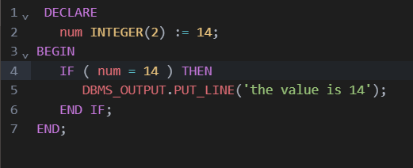
output:-
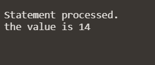
If the condition evaluates to TRUE, then the statements between THEN and ELSE execute.
In case the condition evaluates to FALSE or NULL, the else_statements between ELSE and END IF executes.
syntax:-IF condition THEN
statements;
ELSE
else_statements;
END IF;
Here is an example of this command:-
input:-
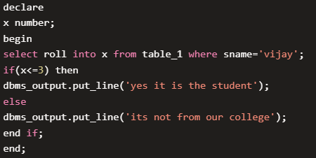
output:-
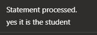
The IF-THEN-ELSIF statement allows you to choose between several alternatives.
An IF-THEN statement can be followed by an optional ELSIF...ELSE statement.
The ELSIF clause lets you add additional conditions
syntax:-
IF ( condition-1 ) THEN
statement-1;
ELSIF ( condition-2 ) THEN
statement-2;
ELSIF ( condition-3 ) THEN
statement-3;
ELSE
statement;
END IF
Here is an example of this command:-
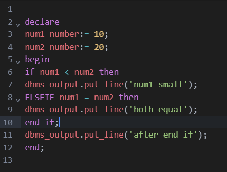
Basic loop structure encloses sequence of statements in between the LOOP and END LOOP statements. With each iteration,
the sequence of statements is executed and then control
resumes at the top of the loop.
syntax:-
LOOP
Sequence of statements;
END LOOP;
Here is an example of this command:-
input:-
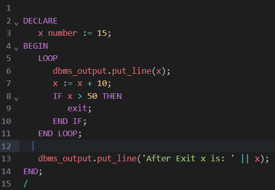
output:-
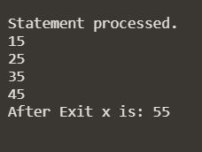
PL/SQL while loop is used when a set of statements has to be executed as long as a condition is true, the While loop is used.
The condition is decided at the beginning of each iteration and continues until the condition becomes false.
syntax:-
Syntax of while loop:
WHILE
LOOP statements;
END LOOP;
Here is an example of this command:-
input:-
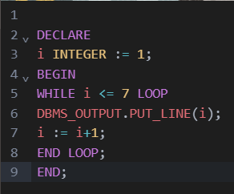
output:-
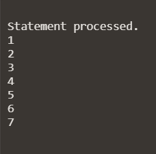
With each iteration of the FOR LOOP statement, its statements run, its index is either incremented or decremented, and control returns
to the top of the loop. The FOR LOOP statement ends when its index reaches a specified value, or when a statement inside the loop
transfers control outside the loop or raises an exception.
syntax:-
FOR loop_counter IN [REVERSE] lowest_number.. highest_number LOOP {...statements...}
END LOOP;
Here is an example of this command:-
input:-
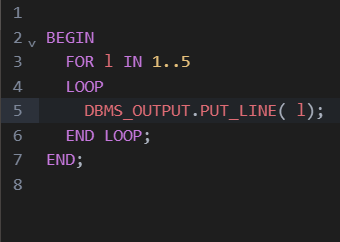
output:-
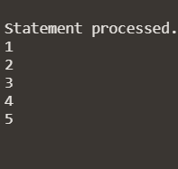